Assembly · Sub-step 3 of 4
Frame assembly
Build up the structural frame that everything else mounts to.
You will need
x 1
x 8
x 10
Flanged
bushing
bushing
Frame
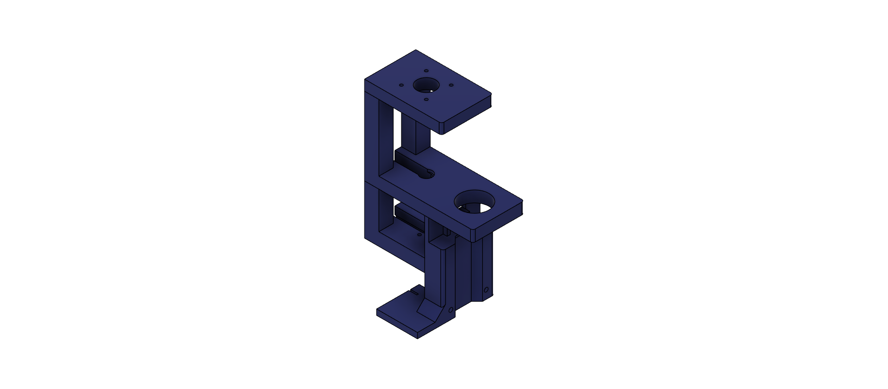
Frame Linear Actuator Mount
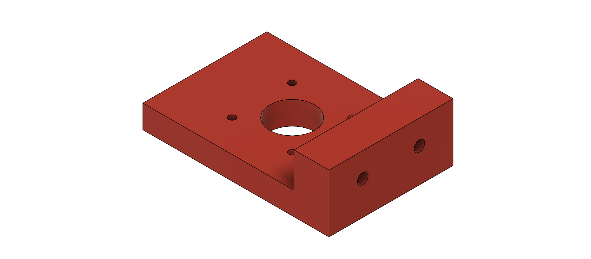
Pipette Bracket
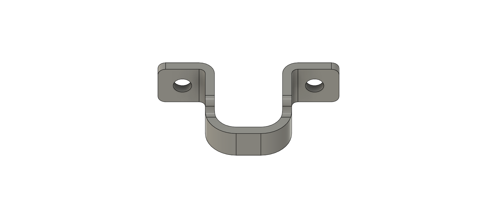
Pipette
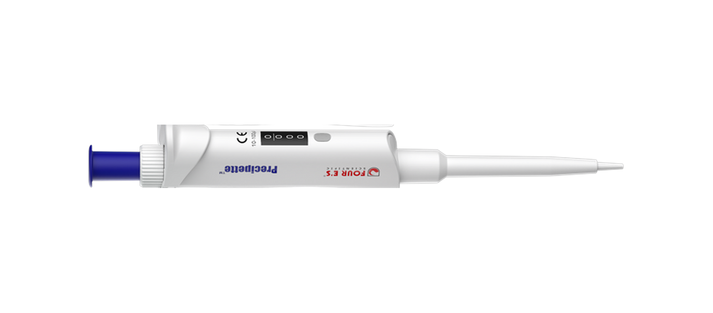
Driver Gear
Driven Gear
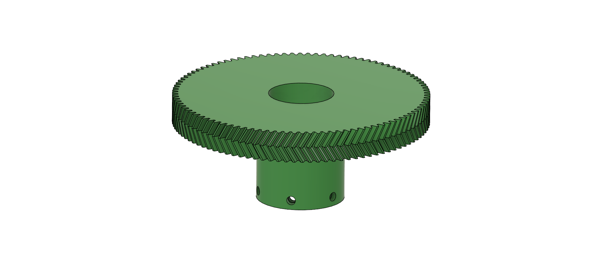
Before you start: the linear rail should already be mounted on the X-axis gantry — that is Filing T-slot nuts, the previous sub-step. The frame clamps onto its carriage, so there is nothing to attach it to until the rail is down and running smoothly.
Instructions
-
Take the Frame to the bench, open side of the "C" facing you. It gives you three shelves to work
between: the top plate, bored for the stepper motor; the middle shelf, with a
small bore for the lead screw and a large bore for the pipette; and the bottom shelf, which
carries the lower end of the lead screw. The leg below the bottom shelf is what clamps onto the linear rail.
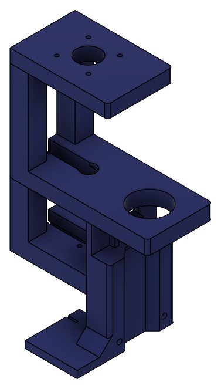
Figure 1: The Frame on its own. Top plate, middle shelf and bottom shelf, with the rail leg hanging below. -
Feed the M8 x 150mm screw through the bottom shelf, through the middle shelf up to top plate until its lower end sits in the bottom
shelf. Use a Flanged Self Lubricating Bushing to ensure that the screw rotates smoothly. Slide the Driver Gear such that it sits
on the middle shelf. No need to screw in the Driver Gear just yet.
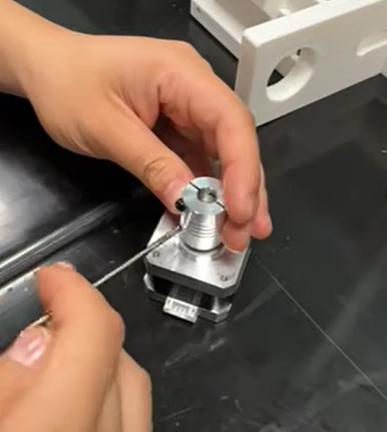
Figure 2: Tightening the shaft coupler's grub screw onto the stepper motor shaft. 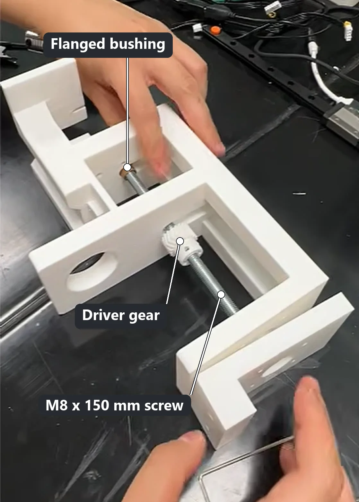
Figure 3: The M8 screw runs down through the frame with the driver gear on it at the middle shelf and the flanged bushing on the bottom shelf. -
Place the Frame Linear Actuator Mount on top of the top plate. Place the stepper motor on top of the top plate and bring the shaft coupler up
to note down which position to screw in the shaft coupler to the stepper motor. Then place the combined module through the holes and screw in the
M8 screw to the shaft coupler.
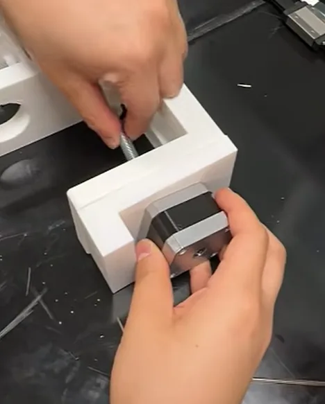
Figure 4: Place the M8 screw inside the stepper motor through the top shelf and Frame Linear Actuator Mount. 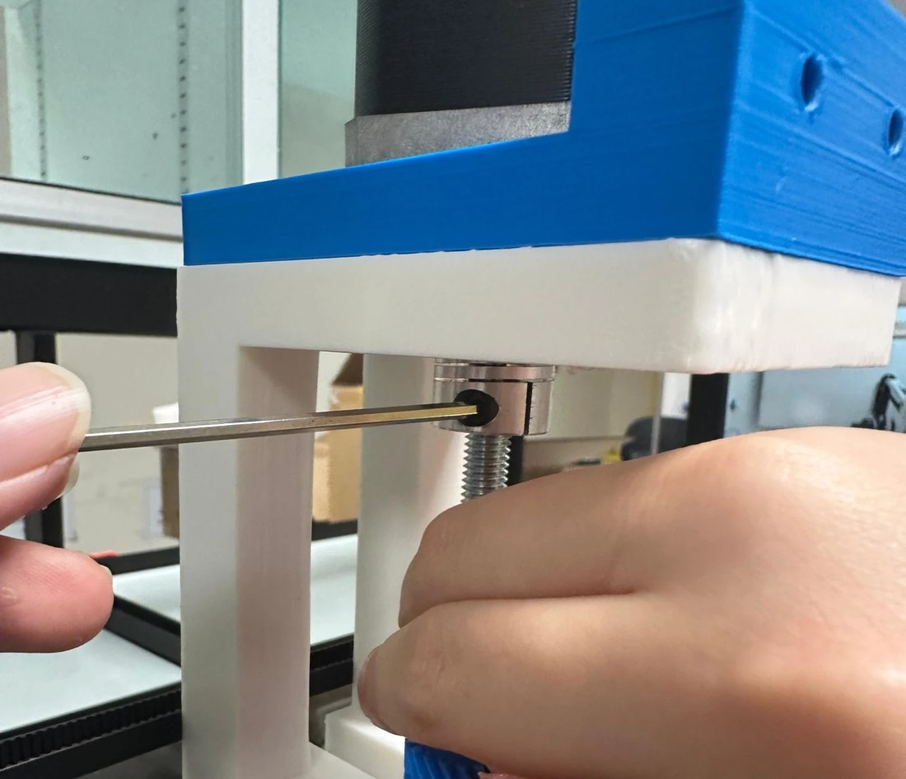
Figure 5: Tightening the shaft coupler's grub screw onto the stepper motor shaft. 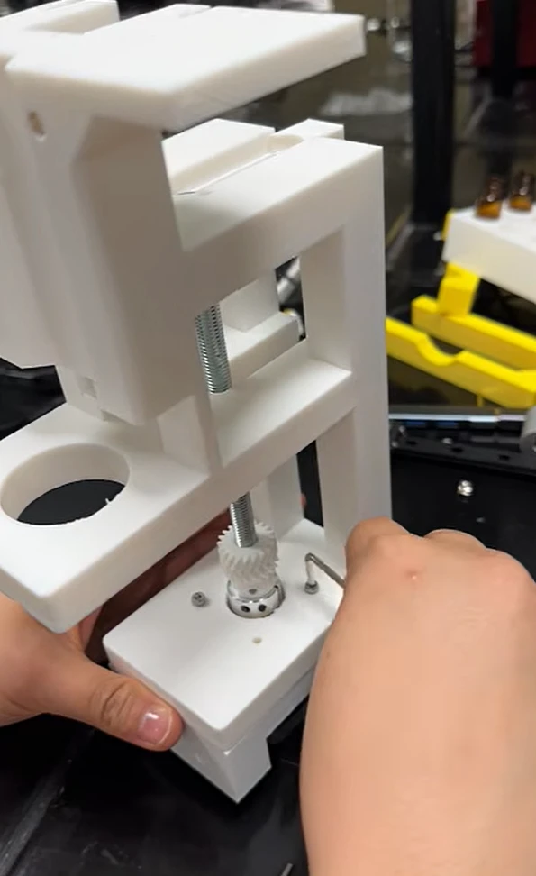
Figure 6: Bolt the stepper motor to the top shelf using ideally four M3 x 30mm screws. -
Secure the Frame to the linear rail carriage using M3 x 30mm screws.
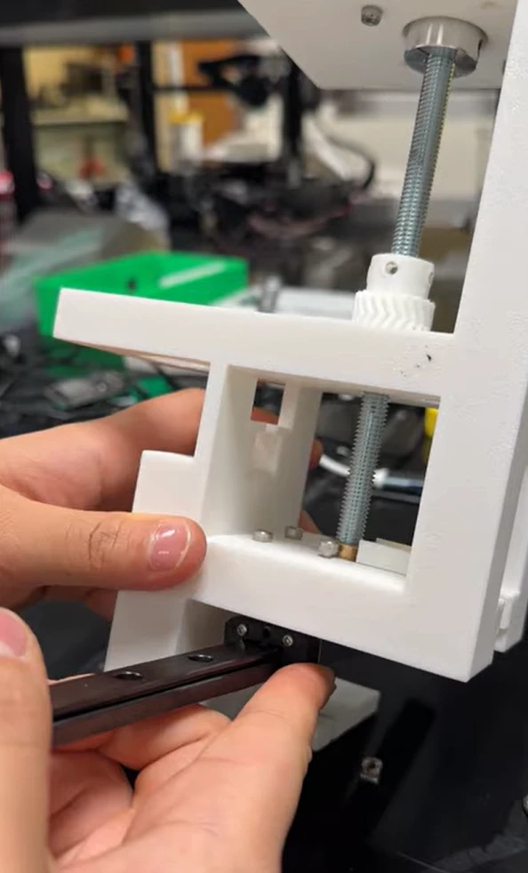
Figure 7: Align four M3 x 30mm screws with the linear carriage for ease of mounting the Frame to the carriage. 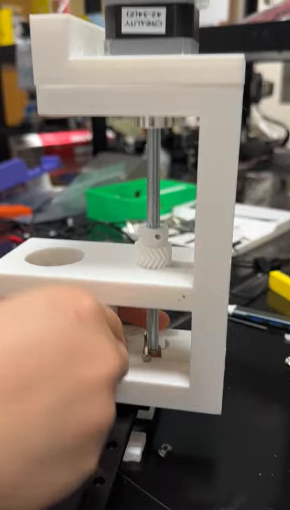
Figure 8: Attach Frame to linear rail carriage securely.
Tutorial videos
Guided tutorial-videos for your convenience.